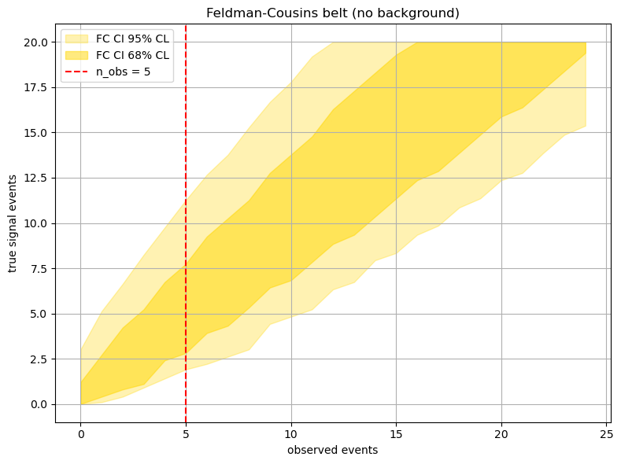
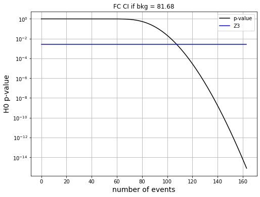

Sensitivity of a counting experiment#
Objectives#
Estimate the sensitivity of the counting experiment
Given a number of background events in the RoI, what is the most probable limit that we set on \(\mathcal{T}_{1/2}^{\beta\beta0\nu}\) in the case of no signal?
Analysis#
Importing modules#
%matplotlib inline
%load_ext autoreload
%autoreload 2
import numpy as np
import tables as tb
import pandas as pd
import matplotlib.pyplot as plt
import scipy.constants as constants
import scipy.stats as stats
import scipy.optimize as optimize
import warnings
warnings.filterwarnings('ignore')
import os, sys
from pathlib import Path
# Find the project root: honours FANAL_ROOT env-var, otherwise walks up from cwd
_env = os.environ.get('FANAL_ROOT') or os.environ.get('USCFANALDIR')
if _env and Path(_env, 'data').is_dir():
rootpath = str(Path(_env).resolve())
else:
rootpath = str(next(p for p in [Path.cwd(), *Path.cwd().parents]
if (p / 'data').is_dir() and (p / 'ana').is_dir()))
if rootpath not in sys.path:
sys.path.insert(0, rootpath)
print('Fanal root : ', rootpath)
Fanal root : /Users/hernando/work/docencia/FPII-fanal/USC-FPII-Fanal
import core.pltext as pltext # extensions for plotting histograms
import core.hfit as hfit # extension to fit histograms
import core.efit as efit # Fit Utilites - Includes Extend Likelihood Fit with composite PDFs
import core.confint as confint # Confidence Intervals
import core.utils as ut # generic utilities
import ana.fanal as fn # analysis functions specific to fanal
import collpars as collpars # collaboration specific parameters
pltext.style()
The half-life relation#
The relation between \(\mathcal{T}_{1/2}^{\beta\beta0\nu}\) and the estimated number of signal events \(n^{\beta\beta}_{RoI}\) in the RoI is:
Where:
\(\delta\) is the abundance of \(^{136}\mathrm{Xe}\) among other \(\mathrm{Xe}\) isotopes (in our experiment, 0.9)
\(\epsilon^{\beta\beta}_{RoI}\) is the efficiency of selecting signal events in the RoI (as a fraction, computed using MC)
\(M\) is the mass of the detector (kg)
\(t\) is the exposure time (y)
\(N_A\) is Avogadro’s number
\(W\) is the atomic mass (g/mol)
Main parameters#
collaboration = collpars.collaboration
sel_ntracks = collpars.sel_ntracks
sel_eblob2 = collpars.sel_eblob2
sel_erange = collpars.sel_erange
sel_eroi = collpars.sel_eroi
n_Bi_E = collpars.n_Bi_E
n_Tl_E = collpars.n_Tl_E
n_Bi_RoI = collpars.n_Bi_RoI
n_Tl_RoI = collpars.n_Tl_RoI
print('Collaboration : {:s}'.format(collaboration))
Collaboration : new_gamma
Data#
### data
# set the path to the data directory and filenames
dirpath = rootpath+'/data/'
filename = 'fanal_' + collaboration + '.h5'
print('Data path and filename : ', dirpath + filename)
# access the simulated data (DataFrames) for the different samples (Bi, Tl, bb) located in the data file
mcbi = pd.read_hdf(dirpath + filename, key = 'mc/bi214').fillna(0.)
mctl = pd.read_hdf(dirpath + filename, key = 'mc/tl208').fillna(0.)
mcbb = pd.read_hdf(dirpath + filename, key = 'mc/bb0nu').fillna(0.)
# set the names of the samples
mc_samples = [mcbi, mctl, mcbb] # list of the mc DFs
sample_names = ['Bi', 'Tl', 'bb']
sample_names_latex = [ r'$^{214}$Bi', r'$^{208}$Tl', r'$\beta\beta0\nu$',] # str names of the mc samples
for i, mc in enumerate(mc_samples):
print('MC Sample {:s}, number of simulated events = {:d}'.format(sample_names[i], len(mc)))
Data path and filename : /Users/hernando/work/docencia/FPII-fanal/USC-FPII-Fanal/data/fanal_new_gamma.h5
MC Sample Bi, number of simulated events = 60184
MC Sample Tl, number of simulated events = 687297
MC Sample bb, number of simulated events = 47636
Confidence Intervals#
Frequentist intervals are usually computed using the Feldman–Cousins construction.
The following code constructs the confidence bands for a given number of observed events (on the x axis) and a range of true signal events (on the y axis).
nbkg = n_Bi_RoI + n_Tl_RoI
nbkg
81.67699999999999
Worked example: Feldman-Cousins with zero background#
Before working with our estimated background, let us build the FC confidence belt for the simplest case: no background (\(n_{bkg} = 0\)). This is just a pure Poisson signal measurement.
In this case, if we observe \(n\) events, all of them must be signal.
# --- Example: FC confidence belt with nbkg = 0 ---
nbkg_example = 0. # no background
nus_example = np.linspace(0., 20., 200) # range of true signal values
ns_example = np.arange(0, 25) # range of observed counts
# Build FC confidence interval functions at 68% and 95% CL
fc_68 = confint.get_fc_confinterval(nus_example, nbkg_example, cl=0.68)
fc_95 = confint.get_fc_confinterval(nus_example, nbkg_example, cl=0.95)
# For a specific observation, say n_obs = 5:
n_obs_example = 5
ci_68 = fc_68(n_obs_example)
ci_95 = fc_95(n_obs_example)
print('Example: n_obs = {:d}, nbkg = {:.0f}'.format(n_obs_example, nbkg_example))
print(' FC CI at 68% CL on signal: ({:.2f}, {:.2f})'.format(*ci_68))
print(' FC CI at 95% CL on signal: ({:.2f}, {:.2f})'.format(*ci_95))
Example: n_obs = 5, nbkg = 0
FC CI at 68% CL on signal: (2.81, 7.74)
FC CI at 95% CL on signal: (1.91, 11.26)
# Plot the FC confidence bands for nbkg = 0
pltext.canvas(1, 1, 6, 8)
for fc, cl, alpha in [(fc_95, 0.95, 0.3), (fc_68, 0.68, 0.5)]:
ys = fc(ns_example)
plt.fill_between(ns_example, *ys, alpha=alpha, color='gold',
label='FC CI {:.0f}% CL'.format(100*cl))
plt.axvline(n_obs_example, color='red', ls='--', label='n_obs = {:d}'.format(n_obs_example))
plt.xlabel('observed events'); plt.ylabel('true signal events')
plt.title('Feldman-Cousins belt (no background)')
plt.legend(); plt.grid(which='both'); plt.tight_layout()

Key observations (no background case):
When \(n_{obs} = 0\), the upper limit at 95% CL is about 3 events (the Poisson upper limit).
As \(n_{obs}\) increases, the confidence interval widens and shifts upward.
For \(n_{obs} = 0\), the interval is one-sided (upper limit only). For larger \(n_{obs}\), it becomes two-sided.
Worked example: the half-life function#
We now implement the function that translates a number of signal events in the RoI into a half-life value, using the formula above.
# --- Example: half-life function ---
def tau_example(nbb):
"""Compute the half-life (years) for a given number of signal events in the RoI."""
delta = 0.9 # 136Xe abundance
W = 0.136 # atomic mass (kg/mol)
eff_RoI = collpars.eff_bb_RoI # signal selection efficiency in RoI
exposure = collpars.exposure # M * t (kg * y)
return delta * eff_RoI * exposure * constants.Avogadro * np.log(2) / (nbb * W)
# Test: if we observe 1 signal event, what half-life does that correspond to?
for nbb_test in [1, 5, 10, 50]:
print(' nbb = {:3d} => T_1/2 = {:.2e} y'.format(nbb_test, tau_example(nbb_test)))
nbb = 1 => T_1/2 = 1.43e+27 y
nbb = 5 => T_1/2 = 2.86e+26 y
nbb = 10 => T_1/2 = 1.43e+26 y
nbb = 50 => T_1/2 = 2.86e+25 y
Note how the half-life is inversely proportional to the number of signal events: fewer signal events imply a longer half-life (the decay is rarer).
Now it is your turn#
Use the actual background from your experiment (nbkg) to:
Build the FC confidence belt at several CLs (68%, 90%, 95%)
Implement a
taufunction for your experimentTranslate the FC intervals into half-life limits
Compute the p-value of the null hypothesis
# Construct the Feldman-Cousins confidence belt.
# ns = np.arange(0, nmax) # range of observed events
#
# Then use confint.get_fc_confinterval() to get the interval for a given observation.
# YOUR CODE HERE
# Plot the Feldman-Cousins confidence band.
# Study how the confidence interval changes with the number of observed events.
# YOUR CODE HERE
Translate the number of signal events into a half-life.
Exercise: Implement the tau function to return the half-life associated with nbb signal events in the selected RoI.
# Implement the tau (half-life) function.
# Use the formula from the markdown above:
#
# def tau(nbb):
# delta = 0.9 # 136Xe abundance
# W = 0.136 # atomic mass in kg/mol
# NA = constants.Avogadro
# eff_RoI = collpars.eff_bb_RoI # signal efficiency in RoI
# Mt = collpars.exposure # exposure in kg*y
# return delta * eff_RoI * Mt * NA * np.log(2) / (nbb * W)
# YOUR CODE HERE
# Print the half-life for different numbers of observed signal events.
# Use the tau() function defined above.
# YOUR CODE HERE
# Plot the half-life as a function of the number of signal events.
# Also plot the Feldman-Cousins confidence interval translated to half-life.
# YOUR CODE HERE
Compute the p-value of the null hypothesis#
The p-value is the probability of observing a result at least as extreme as the one measured, assuming the background-only (no-signal) hypothesis is true.
When the significance exceeds 3 sigma (p < 2.7×10⁻³), we claim evidence; when it exceeds 5 sigma (p < 2.87×10⁻⁷), we claim a discovery.
In the case of a counting experiment, the distribution of the number of observed events under the no-signal hypothesis is a Poisson distribution with mean \(n^{bkg}_{RoI}\), the number of background events in the RoI.
Z3 = 0.0027 # 3-sigma
Z5 = 2.87e-7 # 5-sigma
p0 = stats.poisson.sf(ns, nbkg)
for z in (Z3, Z5):
if (np.min(p0) < z):
n1 = int(np.min(ns[p0<z]))
print('p0-values < {:1.2e} if n > {:d}, Tbb < {:1.2e} y'.format(z, n1, tau(n1)))
p0-values < 2.70e-03 if n > 108, Tbb < 1.08e-01 y
p0-values < 2.87e-07 if n > 131, Tbb < 1.31e-01 y
pltext.canvas(1, 1, 6, 8)
p0 = stats.poisson.sf(ns, nbkg)
plt.plot(ns, p0, label = 'p-value')
plt.plot(ns, Z3 * np.ones(len(ns)), label = 'Z3')
plt.title('FC CI if bkg = {:4.2f}'.format(nbkg));
plt.xlabel('number of events', fontsize = 14); plt.ylabel(r'H0 p-value', fontsize = 14);
plt.yscale('log'); plt.grid(which = 'both'); plt.legend();
